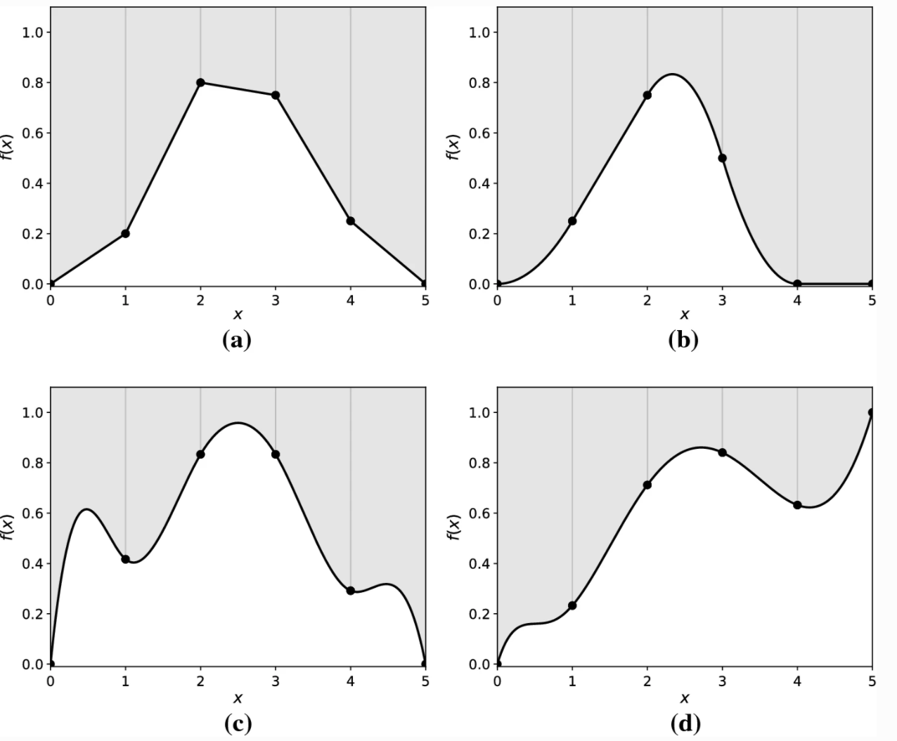

Topic 9 Splines
Learning Goals
- Explain the advantages of splines over global transformations and other types of piecewise polynomials
- Explain how splines are constructed by drawing connections to variable transformations and least squares
- Explain how the number of knots relates to the bias-variance tradeoff
Slides from today are available here.
Splines
A spline is a piecewise polynomial of degree \(k\) that is a continuous function and has continuous derivatives (of orders \(1,...,k-1\)) at its knot points (break points).

Image sourceIn mathematical notation, a spline function \(f\) with knot points \(t_1<...<t_m\),
- is a polynomial of degree \(k\) on each of the intervals \((-\infty,t_1],[t_1,t_2],....,[t_m,\infty)\) and
- the \(j\)th derivative of the spline function \(f\) is continuous at \(t_1,...,t_m\) for \(j=0,1,...,k-1\).
CONNECT to Stat 155: If you had a quadratic model (degree = 2) with 0 knots, how could you fit that model using the tools from Stat 155?
CONNECT to Stat 155: If you had a piecewise linear model (degree = 1) with 1 knot, how could you fit that using the tools from Stat 155?
Splines in tidymodels
To build models with splines in tidymodels, we proceed with the same structure as we use for ordinary linear regression models but we’ll add some pre-processing steps to our recipe.
To work with splines, we’ll use tools from the splines package. The step_ns() function based on ns() in that package creates the transformations needed to create a natural cubic spline function for a quantitative predictor. The step_bs() function based on bs() in that package creates the transformations needed to create a basis spline (typically called B-splines) function for a quantitative predictor.
# Linear Regression Model Spec
lm_spec <-
linear_reg() %>%
set_engine(engine = 'lm') %>%
set_mode('regression')
# Original Recipe
lm_rec <- recipe(___ ~ ___, data = ___)
# Natural Spline Recipe
ns2_rec <- lm_rec %>%
step_ns(__, deg_free = __) # natural cubic spline (higher deg_free means more knots)
# Basis Spline Recipe
bs_rec <- lm_rec %>%
step_bs(__, options = list(knots = c(__,__))) # b-spline (cubic by default)- The
deg_freeargument instep_ns()stands for degrees of freedom:deg_free = # knots + 1- The degrees of freedom are the number of coefficients in the transformation functions that are free to vary (essentially the number of underlying parameters behind the transformations).
- The knots are chosen using percentiles of the observed values.
- The
optionsargument instep_bs()allows you to specific specific knots:options = list(knots = c(2, 4))sets a knot at 2 and a knot at 4 (the choice of knots should depend on the observed range of the quantitative predictor and where you see a change in the relationship)
What is the difference between natural splines ns and B-splines bs?
- B-spline is a tool to incorporate splines into a linear regression setting.
- You have to choose the knots (which can be tricky sometimes).
- These functions can be unstable (high variance) near the boundaries, especially with higher polynomial degrees.
- Natural spline is a variant of the B-spline with additional constraints (the degree of the polynomial near the boundaries is lower).
- Cubic natural splines are the most common
- Typically knots are chosen based on quantiles of the predictor (e.g. 1 knot will be placed at the median, 2 knots will be placed at the 33rd and 66th percentiles, etc.)
Exercises
You can download a template RMarkdown file to start from here.
Before proceeding, install the splines package by entering install.packages("splines") in the Console.
We’ll continue using the College dataset in the ISLR package to explore splines. You can use ?College in the Console to look at the data codebook.
library(ISLR)
library(dplyr)
library(readr)
library(broom)
library(ggplot2)
library(splines)
library(tidymodels)
tidymodels_prefer() # Resolves conflicts, prefers tidymodel functions
data(College)
# A little data cleaning
college_clean <- College %>%
mutate(school = rownames(College)) %>%
filter(Grad.Rate <= 100) # Remove one school with grad rate of 118%
rownames(college_clean) <- NULL # Remove school names as row namesExercise 1: Evaluating a fully linear model
We will model Grad.Rate as a function of 4 predictors: Private, Terminal, Expend, and S.F.Ratio.
- Make scatterplots of the quantitative predictors and the outcome with 2 different smoothing lines to explore potential nonlinearity. Adapt the following code to create a scatterplot with a smooth (curved) blue trend line and a red linear trend line.
ggplot(___, aes(___)) +
geom_point() +
geom_smooth(color = "blue", se = FALSE) +
geom_smooth(method = "lm", color = "red", se = FALSE) +
theme_classic()- Use
tidymodelsto fit a linear regression model (no splines yet) with the following specifications:- Use 8-fold CV.
- Use CV mean absolute error (MAE) to evaluate models.
- Use LASSO engine to do variable selection to select the simplest model for which the metric is within one standard error of the best metric.
- Fit your “best” model and look at coefficients of that final model.
set.seed(___)
# Create CV folds
data_cv8 <- vfold_cv(__, v = 8)
# Lasso Model Spec with tune
lm_lasso_spec_tune <-
linear_reg() %>%
set_args(mixture = 1, penalty = tune()) %>% ## mixture = 1 indicates Lasso
set_engine(engine = 'glmnet') %>%
set_mode('regression')
# Recipe
full_rec <- recipe(__ ~ ___, data = college_clean) %>%
step_normalize(all_numeric_predictors()) %>%
step_dummy(all_nominal_predictors())
# Workflow (Recipe + Model)
lasso_wf_tune <- workflow() %>%
add_recipe(full_rec) %>%
add_model(lm_lasso_spec_tune)
# Tune Model (trying a variety of values of Lambda penalty)
penalty_grid <- grid_regular(
penalty(range = c(-3, 1)), #log10 transformed
levels = 30)
tune_output <- tune_grid(
lasso_wf_tune, # workflow
resamples = data_cv8, # cv folds
metrics = metric_set(___),
grid = penalty_grid # penalty grid defined above
)
# Select best model & fit
best_penalty <- tune_output %>%
select_by_one_std_err(metric = 'mae', desc(penalty))
ls_mod <- best_penalty %>%
finalize_workflow(lasso_wf_tune,.) %>%
fit(data = college_clean)
# Note which variable is the "least" important
ls_mod %>% tidy()- Make plots of the residuals vs. the 3 quantitative predictors to evaluate the appropriateness of linear terms.
ls_mod_output <- college_clean %>%
bind_cols(predict(ls_mod, new_data = college_clean)) %>%
mutate(resid = __ - __)
ggplot(ls_mod_output, aes(__)) +
___ +
___ +
geom_hline(yintercept = 0, color = "red") +
theme_classic()Exercise 2: Evaluating a spline model
We’ll extend our best linear regression model with spline functions of the quantitative predictors (leave Private as is).
What tuning parameter is associated with splines? How do high/low values of this parameter relate to bias and variance?
Update your recipe from Exercise 1 to fit a linear model (with the
lmengine rather than lasso) with the 2 best quantitative predictors with natural splines that have 2 knots (= 3 degrees of freedom) and includePrivate. Fit this model with CV,fit_resamples, (same folds as before) to compare MAE and then fit the model to the whole training data. Call this fit modelns_mod.
# Model Spec
lm_spec <-
linear_reg() %>%
set_engine(engine = 'lm') %>%
set_mode('regression')
# New Recipe (remove steps needed for LASSO, add splines)
# Workflow (Recipe + Model)
# CV to Evaluate
cv_output <- fit_resamples(
___, # workflow
resamples = data_cv8, # cv folds
metrics = metric_set(___)
)
cv_output %>% collect_metrics()
# Fit with all data
ns_mod <- fit(
___, #workflow
data = college_clean
)- Make plots of the residuals vs. the 3 quantitative predictors to evaluate if splines improved the model.
spline_mod_output <- ___
# Residual plots- Compare the CV MAE between models with and without the splines.
tune_output %>% collect_metrics() %>% filter(penalty == (best_penalty %>% pull(penalty)))
cv_output %>% collect_metrics()Extra! Variable scaling
What is your intuition about whether variable scaling matters for the performance of splines?
Check you intuition by reusing code from Exercise 2, except by adding in step_normalize(all_numeric_predictors()) before step_ns(). Call this ns_mod2.
How do the predictions from ns_mod and ns_mod2 compare? You could use a plot to compare or check out the all.equal() function.